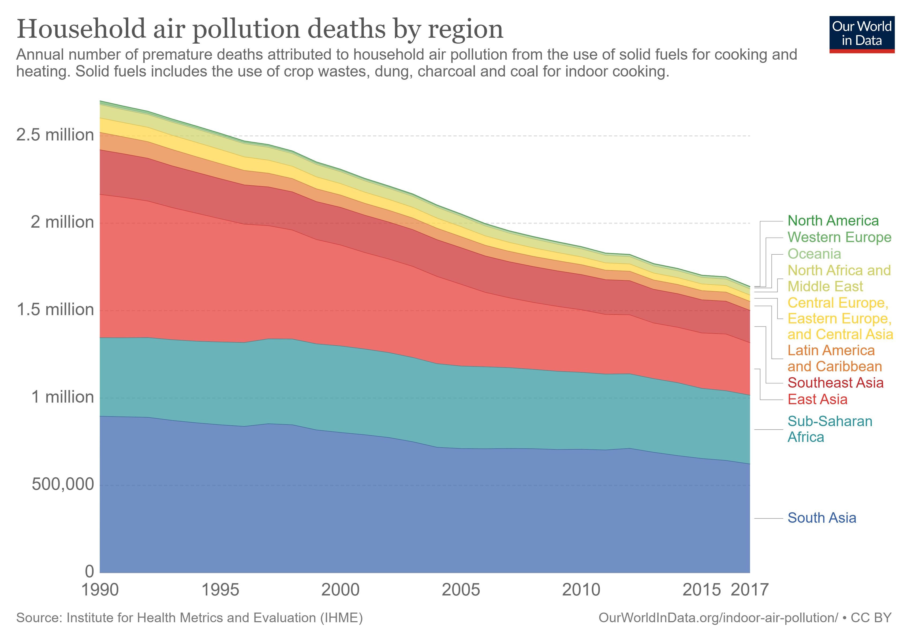
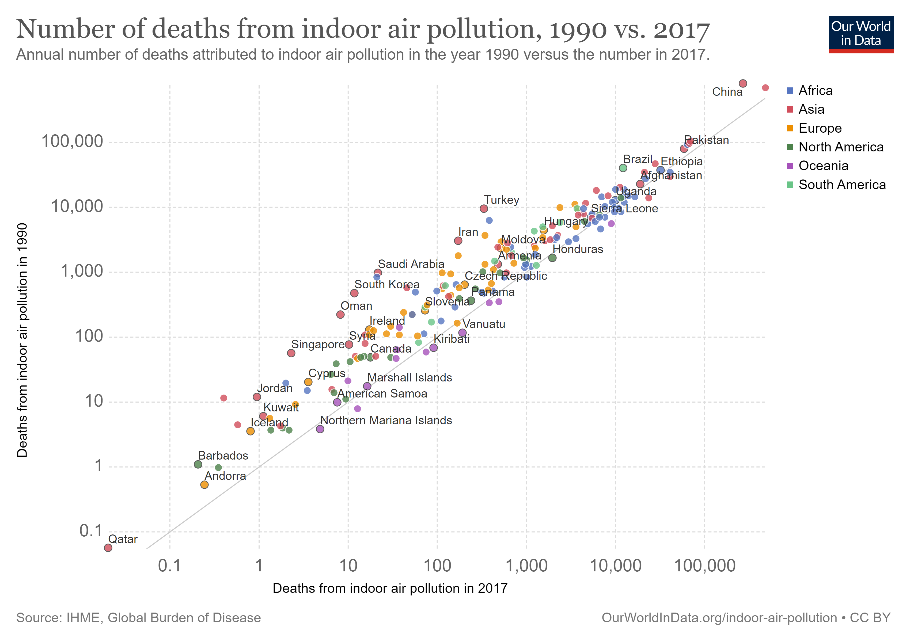

Indoor air pollution is one of the world’s largest environmental problems – particularly for the poorest in the world who often do not have access to clean fuels for cooking. The Global Burden of Disease is a major global study on the causes and risk factors for death and disease published in the medical journal The Lancet.1 These estimates of the annual number of deaths attributed to a wide range of risk factors are shown here. This chart is shown for the global total, but can be explored for any country or region using the “change country” toggle.
Indoor air pollution is a risk factor for several of the world’s leading causes of death, including heart disease, pneumonia, stroke, diabetes and lung cancer.2 In the chart we see that it is one of the leading risk factors for death globally. According to the Global Burden of Disease study 1.6 million people died prematurely in 2017 as a result of indoor air pollution. To put this into context: this was four times the number of homicides – close to 400,000 in 2017.
How has mortality from indoor air pollution changed over time?
Annual deaths from indoor air pollution have declined globally by more than 1 million since 1990 Whilst indoor air pollution is still one of the leading risk factors for mortality, and the largest risk factor at low incomes, the world has also made significant progress in recent decades.
Globally, the number of annual deaths from indoor air pollution has fallen by more than 1 million since 1990. As we see in the visualization, in 1990 an estimated 2.7 million died prematurely as a result; by 2017 this had fallen to 1.6 million. This means that despite continued population growth in recent decades, the total number of deaths from indoor air pollution has still declined.